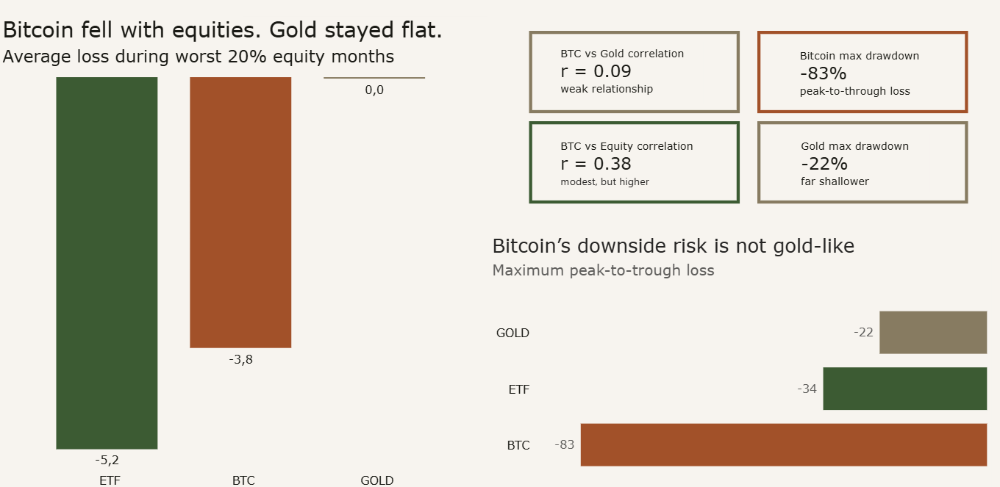
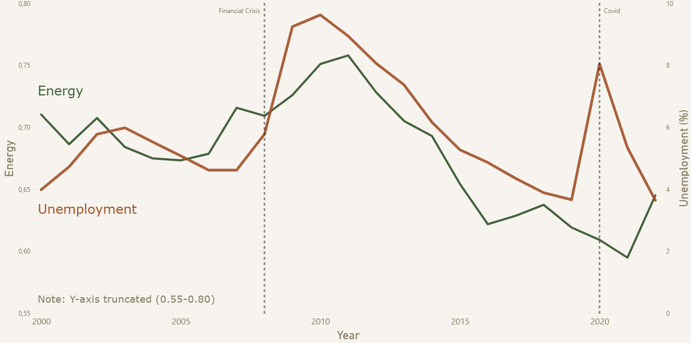
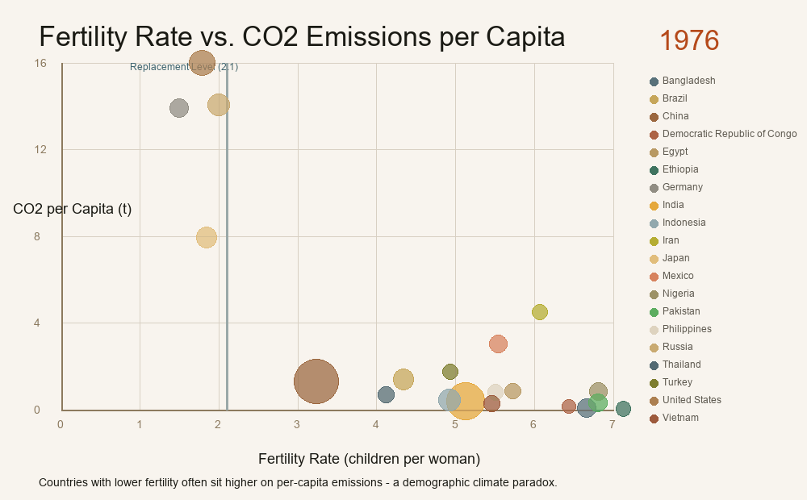

01 Business Intelligence & Data Analytics
Data, stories & systems
Enes
Baki
Adem
Using data to understand how technology, economics and society shape the way we live.
02 About
Data projects with a point of view.
I got into data because I’d rather understand the world than assume it. I’m drawn to questions where the obvious answer turns out to be wrong — where the numbers tell a different story than the headline.
03 Selected Projects
-

-

-

-
04 Contact